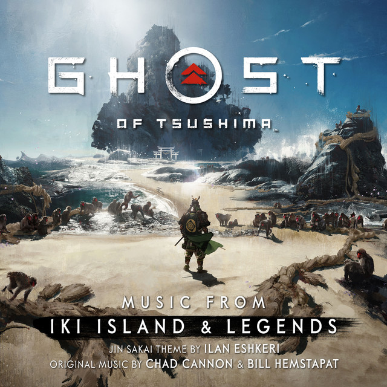

Ghost of Tsushima is a 2020 action-adventure game developed by Sucker Punch Productions and published by Sony Interactive Entertainment. The player controls Jin Sakai, a samurai on a quest to protect Tsushima Island during the first Mongol invasion of Japan. |
The game was released for PlayStation 4 in July 2020, and an expanded version for PlayStation 4 and PlayStation 5, subtitled Director's Cut and featuring the Iki Island expansion, was released in August 2021.
Ghost of Tsushima has received positive reviews upon release, with critics praising the game's melee combat, story, characters, performances, and music, though it received some criticism for its implementations of stealth gameplay and open world structure.
|  |
The Iki Island DLC is an expansion for Ghost of Tsushima, and is only available in the Ghost of Tsushima Director's Cut. It is set on the island of Iki, where Jin goes to explore after hearing about rumors of a Mongol presence |